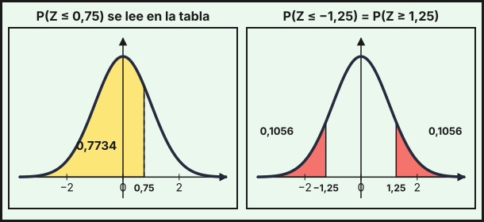
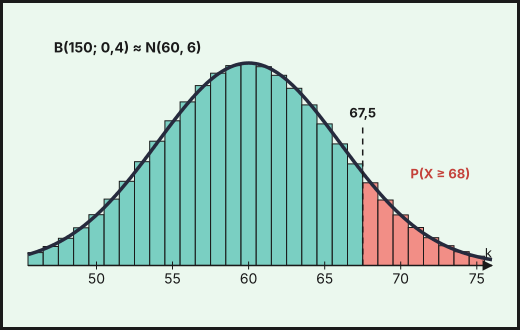

Distribuciones binomial y normal
1. Variables aleatorias discretas y continuas
Una variable aleatoria \(X\) asigna un número a cada resultado de un experimento aleatorio. Es discreta si toma un número finito (o numerable) de valores, y continua si puede tomar cualquier valor de un intervalo.
Variable discreta. Se describe con su función de probabilidad: la tabla de los valores \(x_i\) y sus probabilidades \(p_i=P(X=x_i)\), con \(p_i\ge0\) y \(\sum p_i=1\). Sus parámetros son:
\[\mu=E[X]=\sum x_i\,p_i\qquad\sigma^2=\sum x_i^2\,p_i-\mu^2\qquad\sigma=\sqrt{\sigma^2}\]
Ejemplo. Los ingresos diarios \(X\) (en euros) de un puesto de mercado tienen esta distribución:
| \(x_i\) | \(0\) | \(100\) | \(200\) | \(300\) |
|---|---|---|---|---|
| \(p_i\) | \(0{,}1\) | \(0{,}3\) | \(0{,}4\) | \(0{,}2\) |
La suma de probabilidades es \(1\). La media es \(\mu=0\cdot0{,}1+100\cdot0{,}3+200\cdot0{,}4+300\cdot0{,}2=170\) €. Como \(\sum x_i^2p_i=10000\cdot0{,}3+40000\cdot0{,}4+90000\cdot0{,}2=37000\), la varianza es \(\sigma^2=37000-170^2=8100\) y la desviación típica \(\sigma=90\) €.
Variable continua. Se describe con una función de densidad \(f(x)\ge0\) cuya área total vale \(1\). La probabilidad de un intervalo es el área bajo \(f\) (integral, tema 8):
\[P(a\le X\le b)=\int_a^bf(x)\,dx\qquad P(X=a)=0\qquad\mu=\int x\,f(x)\,dx\qquad\sigma^2=\int x^2f(x)\,dx-\mu^2\]
Ejemplo. El tiempo de espera \(X\) (en minutos) en una oficina tiene densidad \(f(x)=\dfrac{10-x}{50}\) para \(0\le x\le10\) (es un triángulo de base 10 y altura \(0{,}2\), de área \(1\)). Entonces
\[P(X\le2)=\int_0^2\frac{10-x}{50}\,dx=\frac{1}{50}\Bigl[10x-\tfrac{x^2}{2}\Bigr]_0^2=0{,}36,\qquad P(X>5)=\int_5^{10}\frac{10-x}{50}\,dx=0{,}25\]
La media es \(\mu=\int_0^{10}\frac{x(10-x)}{50}dx=\frac{10}{3}\approx3{,}33\) min, y como \(\int_0^{10}\frac{x^2(10-x)}{50}dx=\frac{50}{3}\), la varianza es \(\sigma^2=\frac{50}{3}-\frac{100}{9}=\frac{50}{9}\) y \(\sigma\approx2{,}36\) min.
2. Distribución binomial
Un experimento sigue una distribución binomial \(B(n,\,p)\) si consiste en \(n\) pruebas independientes con solo dos resultados (éxito, con probabilidad \(p\), y fracaso, con \(q=1-p\)) y la misma probabilidad en todas. La variable \(X\) = «número de éxitos» toma los valores \(0,1,\dots,n\):
\[P(X=k)=\binom nk\,p^k\,q^{\,n-k},\qquad\mu=n\,p,\qquad\sigma=\sqrt{n\,p\,q}\]
Ejemplo. El \(30\,\%\) de los hogares de un barrio tiene fibra óptica. Se visitan 8 hogares al azar (con reemplazamiento, es decir, con independencia), y \(X\) = «hogares con fibra» sigue \(B(8;\,0{,}3)\):
- \(P(X=3)=\binom83\cdot0{,}3^3\cdot0{,}7^5=56\cdot0{,}027\cdot0{,}16807\approx0{,}2541\).
- \(P(X\ge2)=1-P(X=0)-P(X=1)=1-0{,}7^8-8\cdot0{,}3\cdot0{,}7^7\approx1-0{,}0576-0{,}1977=0{,}7447\).
- \(\mu=8\cdot0{,}3=2{,}4\) hogares y \(\sigma=\sqrt{8\cdot0{,}3\cdot0{,}7}=\sqrt{1{,}68}\approx1{,}296\).
3. Distribución normal
La distribución normal \(N(\mu,\,\sigma)\) tiene una densidad en forma de campana, simétrica respecto de \(x=\mu\): la media \(\mu\) marca el centro y la desviación típica \(\sigma\) la dispersión. El área total es \(1\) y cada mitad vale \(0{,}5\).
La normal estándar es \(Z\sim N(0,\,1)\). Cualquier \(X\sim N(\mu,\sigma)\) se tipifica:
\[Z=\frac{X-\mu}{\sigma}\sim N(0,\,1)\qquad P(X\le x)=P\!\left(Z\le\frac{x-\mu}{\sigma}\right)\]
Cómo se usa la tabla
La tabla da \(\Phi(z)=P(Z\le z)\) para \(z\ge0\). Está en el examen, con cuatro decimales hasta \(z=2{,}6\) y cinco decimales desde \(z=2{,}7\). La fila da \(z\) con un decimal y la columna, el segundo decimal. Un extracto:
| \(z\) | \(0{,}00\) | \(0{,}01\) | \(0{,}02\) | \(0{,}03\) | \(0{,}04\) | \(0{,}05\) | \(0{,}06\) | \(0{,}07\) | \(0{,}08\) | \(0{,}09\) |
|---|---|---|---|---|---|---|---|---|---|---|
| \(0{,}7\) | \(0{,}7580\) | \(0{,}7611\) | \(0{,}7642\) | \(0{,}7673\) | \(0{,}7704\) | \(0{,}7734\) | \(0{,}7764\) | \(0{,}7794\) | \(0{,}7823\) | \(0{,}7852\) |
| \(1{,}0\) | \(0{,}8413\) | \(0{,}8438\) | \(0{,}8461\) | \(0{,}8485\) | \(0{,}8508\) | \(0{,}8531\) | \(0{,}8554\) | \(0{,}8577\) | \(0{,}8599\) | \(0{,}8621\) |
| \(1{,}2\) | \(0{,}8849\) | \(0{,}8869\) | \(0{,}8888\) | \(0{,}8907\) | \(0{,}8925\) | \(0{,}8944\) | \(0{,}8962\) | \(0{,}8980\) | \(0{,}8997\) | \(0{,}9015\) |
| \(1{,}6\) | \(0{,}9452\) | \(0{,}9463\) | \(0{,}9474\) | \(0{,}9484\) | \(0{,}9495\) | \(0{,}9505\) | \(0{,}9515\) | \(0{,}9525\) | \(0{,}9535\) | \(0{,}9545\) |
| \(2{,}7\) | \(0{,}99653\) | \(0{,}99664\) | \(0{,}99674\) | \(0{,}99683\) | \(0{,}99693\) | \(0{,}99702\) | \(0{,}99711\) | \(0{,}99720\) | \(0{,}99728\) | \(0{,}99736\) |
Por ejemplo, \(P(Z\le0{,}75)\) es la fila \(0{,}7\), columna \(0{,}05\): \(0{,}7734\). Las reglas para cualquier probabilidad son:
| Se pide | Cálculo con la tabla |
|---|---|
| \(P(Z\le z)\), con \(z\ge0\) | se lee directamente |
| \(P(Z>z)\) | \(1-P(Z\le z)\) |
| \(P(Z\le-z)\) | \(1-P(Z\le z)\) (simetría) |
| \(P(a<Z<b)\) | \(P(Z\le b)-P(Z\le a)\) |
Si al tipificar \(z\) tiene más de dos decimales, se redondea a dos decimales para leer la tabla (en el examen los datos suelen dar \(z\) con dos decimales).

Ejemplo. El tiempo diario que los adolescentes de una región dedican a redes sociales sigue \(X\sim N(150,\,40)\) minutos.
- \(P(X\le180)=P\!\left(Z\le\frac{180-150}{40}\right)=P(Z\le0{,}75)=0{,}7734\).
- \(P(X>200)=P(Z>1{,}25)=1-0{,}8944=0{,}1056\).
- \(P(130<X<190)=P(-0{,}5<Z<1)=P(Z\le1)-P(Z\le-0{,}5)=0{,}8413-(1-0{,}6915)=0{,}5328\).
- \(P(X<110)=P(Z<-1)=1-0{,}8413=0{,}1587\).
Lectura inversa de la tabla
A veces se conoce la probabilidad y hay que hallar \(z\). Si el valor aparece en la tabla, se lee su \(z\). Si no aparece, se acepta cualquiera de dos procedimientos:
- Valor más cercano: se toma el \(z\) de la tabla cuya probabilidad esté más próxima.
- Interpolación: si \(p\) está entre \(p_1=\Phi(z_1)\) y \(p_2=\Phi(z_2)\) con \(z_2=z_1+0{,}01\), entonces \[z\approx z_1+0{,}01\cdot\frac{p-p_1}{p_2-p_1}\]
Ejemplo. ¿Por debajo de qué tiempo está el \(90\,\%\) de los adolescentes? Se busca \(k\) con \(P(X\le k)=0{,}90\), es decir, \(P(Z\le z)=0{,}90\). En la tabla, \(0{,}8997\) (\(z=1{,}28\)) y \(0{,}9015\) (\(z=1{,}29\)): el \(0{,}90\) no aparece.
- Valor más cercano: \(0{,}8997\) está a \(0{,}0003\) y \(0{,}9015\) a \(0{,}0015\), luego \(z=1{,}28\) y \(k=150+40\cdot1{,}28=201{,}2\).
- Interpolación: \(z\approx1{,}28+0{,}01\cdot\frac{0{,}9000-0{,}8997}{0{,}9015-0{,}8997}=1{,}28+0{,}01\cdot\frac{0{,}0003}{0{,}0018}\approx1{,}2817\), y \(k\approx201{,}27\).
Con el valor exacto, \(z=1{,}28155\) y \(k\approx201{,}26\). En los tres casos, \(k\approx201\) minutos.
Ejemplo (valor que sí aparece). \(P(X\le k)=0{,}9332\): en la tabla \(0{,}9332\) corresponde a \(z=1{,}50\), luego \(k=150+40\cdot1{,}5=210\) min.
Ejemplo (probabilidad de la cola). ¿Qué tiempo superan solo el \(5\,\%\)? \(P(X>k)=0{,}05\Rightarrow P(X\le k)=0{,}95\). En la tabla, \(0{,}9495\) (\(z=1{,}64\)) y \(0{,}9505\) (\(z=1{,}65\)) están a la misma distancia: se acepta \(z=1{,}64\), \(z=1{,}65\) o la interpolación \(z=1{,}645\). Resulta \(k=215{,}6\); \(216{,}0\) o \(215{,}8\) (el valor exacto es \(215{,}79\)): en todos los casos, \(k\approx216\) minutos.
Ejemplo (desviación típica desconocida). Si \(X\sim N(150,\sigma)\) y \(P(X\le170)=0{,}8413\), entonces \(\frac{170-150}{\sigma}=1\) (la tabla da \(0{,}8413\) para \(z=1\)), de donde \(\sigma=20\).
La tabla redondea a cuatro decimales y \(z\) se redondea a dos, así que el resultado puede diferir del valor exacto en la cuarta cifra decimal (o más). Por ejemplo, \(P(-1<Z<1)=2\cdot0{,}8413-1=0{,}6826\) con la tabla, frente a \(0{,}6827\) exacto. Si \(X=165\), \(z=\frac{15}{40}=0{,}375\), que se redondea a \(0{,}38\): \(P(X\le165)\approx0{,}6480\) con la tabla y \(0{,}6462\) con el valor exacto de \(z\). En el examen se aceptan los resultados obtenidos con la tabla.
4. Aproximación de la binomial por la normal
Si \(X\sim B(n,\,p)\) y se cumplen las dos condiciones
\[n\,p\ge5\qquad\text{y}\qquad n\,(1-p)\ge5\]
entonces \(X\) se aproxima por una normal con la misma media y desviación típica:
\[B(n,\,p)\ \approx\ Y\sim N\!\left(np,\ \sqrt{npq}\right)\]
Como la binomial es discreta y la normal continua, se aplica siempre la corrección por continuidad: cada valor entero \(k\) se representa por el intervalo \((k-0{,}5,\ k+0{,}5)\).
| Binomial | Con la normal \(Y\) |
|---|---|
| \(P(X=k)\) | \(P(k-0{,}5<Y<k+0{,}5)\) |
| \(P(X\le k)\) | \(P(Y<k+0{,}5)\) |
| \(P(X<k)=P(X\le k-1)\) | \(P(Y<k-0{,}5)\) |
| \(P(X\ge k)\) | \(P(Y>k-0{,}5)\) |
| \(P(X>k)=P(X\ge k+1)\) | \(P(Y>k+0{,}5)\) |
| \(P(a\le X\le b)\) | \(P(a-0{,}5<Y<b+0{,}5)\) |
Ejemplo. El \(40\,\%\) de los hogares de un barrio tiene fibra óptica y se encuestan \(150\): \(X\sim B(150;\,0{,}4)\). Se comprueba: \(np=60\ge5\) y \(nq=90\ge5\), luego \(X\approx Y\sim N(60,\,6)\) porque \(\sigma=\sqrt{150\cdot0{,}4\cdot0{,}6}=\sqrt{36}=6\).
- \(P(X\ge68)=P(Y>67{,}5)=P\!\left(Z>\frac{67{,}5-60}{6}\right)=P(Z>1{,}25)=1-0{,}8944=0{,}1056\).
- \(P(X\le55)=P(Y<55{,}5)=P(Z<-0{,}75)=1-0{,}7734=0{,}2266\).
- \(P(53\le X\le64)=P(52{,}5<Y<64{,}5)=P(-1{,}25<Z<0{,}75)=0{,}7734-(1-0{,}8944)=0{,}6678\).

Sin ella, \(P(X\ge68)\approx P(Z\ge1{,}33)=0{,}0918\), lejos del valor exacto de la binomial, \(0{,}1061\). Con la corrección sale \(0{,}1056\).
| Probabilidad | Binomial exacta | Aproximación con la tabla |
|---|---|---|
| \(P(X\ge68)\) | \(0{,}1061\) | \(0{,}1056\) |
| \(P(X\le55)\) | \(0{,}2274\) | \(0{,}2266\) |
| \(P(53\le X\le64)\) | \(0{,}6691\) | \(0{,}6678\) |
(El valor exacto de la normal da \(0{,}1056\), \(0{,}2266\) y \(0{,}6677\): coincide con la tabla salvo en la última cifra del tercero.)
- Discreta: \(\mu=\sum x_ip_i\), \(\sigma^2=\sum x_i^2p_i-\mu^2\). Continua: \(P(a\le X\le b)=\int_a^bf\).
- \(B(n,p)\): \(P(X=k)=\binom nkp^kq^{n-k}\), \(\mu=np\), \(\sigma=\sqrt{npq}\).
- \(N(\mu,\sigma)\): se tipifica con \(Z=(X-\mu)/\sigma\) y se usa la tabla de \(P(Z\le z)\): \(P(Z>z)=1-P(Z\le z)\) y \(P(Z\le-z)=1-P(Z\le z)\).
- Lectura inversa: si el valor no aparece, valor más cercano o interpolación.
- \(B(n,p)\approx N(np,\sqrt{npq})\) si \(np\ge5\) y \(nq\ge5\), siempre con corrección por continuidad (\(\pm0{,}5\)).